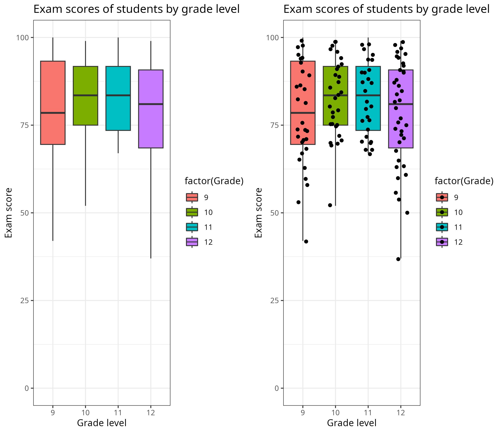
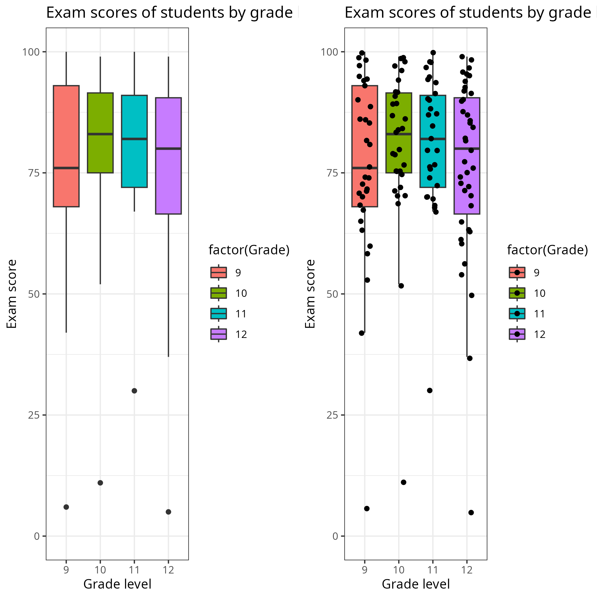
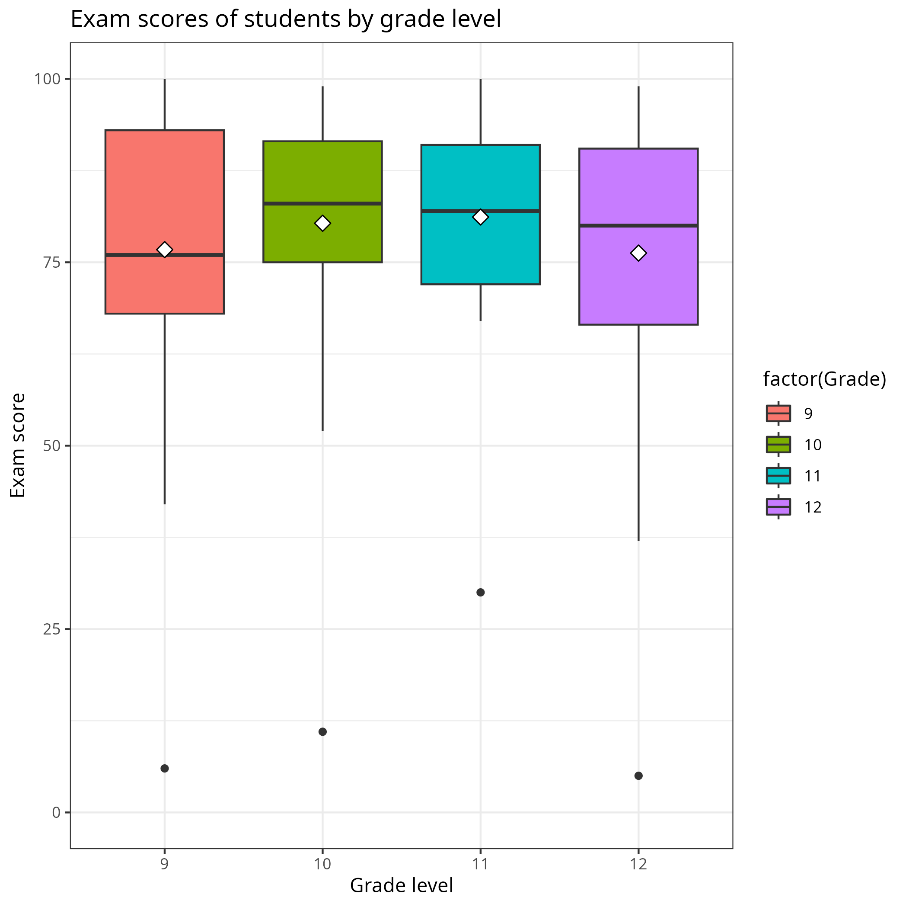
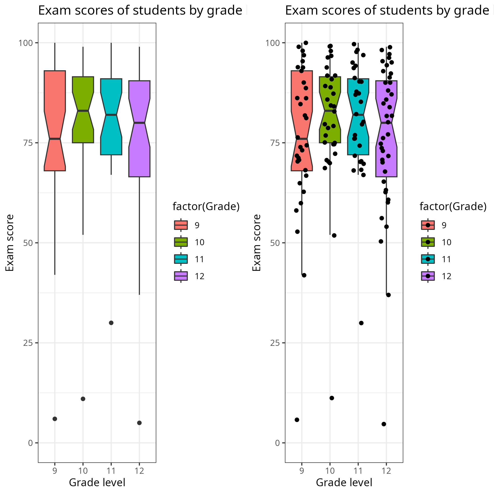

Section 2.4 Box and whisker plots
Now that we know about quartiles and medians, we can talk about a convenient visual device for summarizing a data set. A
box and whisker plot, also called a
box plot, is a visual that shows the median, first and third quartiles, and minimum and maximum of a data set. In this way you can quickly see the center and spread of the data.
In this example, box and whisker plots are given for a data set of exam performance by students in various grade levels. A different box and whisker is given for each grade, so that you can easily compare them. A second version of the plot is given to the side, with dots representing the various exam scores for each grade level. This extra level of information is only sometimes helpful. Here, it’s included to help you visualize what a box and whisker plot is showing.

Two box and whisker plots, as described in the paragraph before the image.
Note that the boundary lines of the box part of the plot shows the first quartile and the third quartile, while the median is the line across the middle of the box. Half of the data points fall into the box. The remaining half are in the whiskers, extending out from the quartiles to the minimum and maximum.
In this way, a box and whisker plot gives a quick visual summary of the
five-number summary of a data set: the minimum, first quartile, median, third quartile, and maximum. From this you can also determine the range—the maximum minus the minimum—and the
interquartile range—namely, the third quartile minus the first quartile.
A common variation is to visually separate outliers from the whiskers. The reasoning is, it’s misleading to have a really long whisker to reach out to an outlier; it makes the data look more spread out than they are.
Here is a version of the earlier plot, but with outliers added to the data.

Slight variations on the previous box and whisker plots, but now with low score outliers added to each grade level. The whiskers don’t extend to reach these outliers, which are instead plotted as points. This is good, because if the bottom whiskers did reach to the outliers they would be overly long and wrongly give the impression that the data are spread out so far!
Box and whisker plots can be decorated with additional information. One common choice is to plot the means with the boxes. Here is the same plot as before but with means added.

The box plot on the left from before, but now with little diamonds on each plot marking the mean. The plot with the dots for scores isn’t shown, as that much data all at once gets messy and hard to read.
Another common variation is to include information about a
confidence interval for the median. In many real-world applications, we don’t know the exact value of the median or other summary because we don’t have access to the whole data set. Instead, we can say that it is probably in a certain range. While we won’t talk about the methods needed to determine that range, we can see it visually.
Here is the same plot again but with notches in the boxes to show the confidence intervals for the medians. If your plot has just the medians, it may look like you can confidently order them. But with the notches you can see that might not be so clear; boxes with overlapping notches have overlap in the confidence intervals in the mean, so there is a reasonable likelihood that the order is actually different. In jargon, we’d say the difference is not
statistically significant.

The box plots from before, but now with notches on each plot box marking the confidence interval of the median. This is a bit fatuous of an example, since in this case we know
\(100\%\) of the data: it’s a small number of exam scores. But if these represented random samples from a larger population then this would be more meaningful.
As these examples illustrate, one advantage of box plots is that they enable quick comparisons of different data sets. You can visually see how they differ in their different summaries. A less detailed plot wouldn’t give you enough info, while a more detailed plot might give so much information that it’s hard to quickly read off and compare different plots. Box and whisker plots sit in a nice sweet spot.
Exercises Exercises
1.
A data set has the following five-number summary: minimum
\(10\text{,}\) first quartile
\(50\text{,}\) median
\(120\text{,}\) third quartile
\(150\text{,}\) maximum
\(180\text{.}\) Draw a box and whisker plot for this data set. Write a sentence or two explaining what this plot tells you about how the data set is distributed.
2.
As an exercise in the last section you used the internet to determine the following values about household income in Massachusetts: mean, median, first quartile, third quartile. Further determine the first and ninth deciles of household income. Use this information to create a box and whisker plot, where the whiskers go out to the first and ninth deciles.
3.
Find an online or print media source which uses multiple box and whisker plots to compare data sets. Summarize what this data visualization is showing. Include a copy of the visualization and give a url or citation for your source.